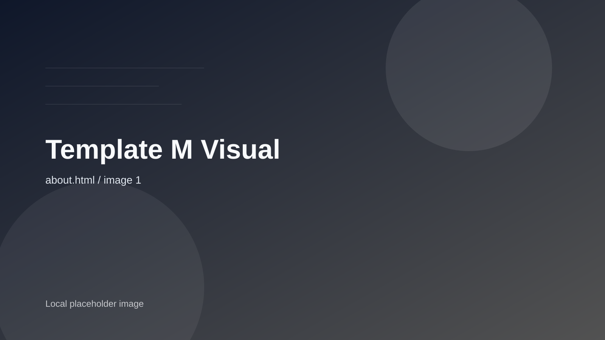

Defining space through the absence of noise.
Scroll to explore
Kyoto, JP — 2023
Berlin, DE — 2022
Oslo, NO — 2024
Minimal is not the absence of something. It is the perfect amount of something. Precision in silence.
